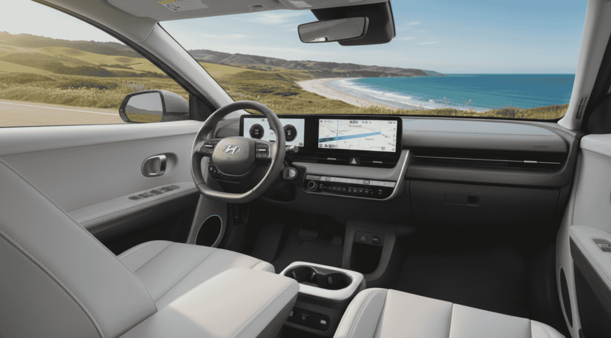

La movilidad eléctrica está en plena expansión y los SUV eléctricos se han convertido en los grandes protagonistas. Entre ellos, el Tesla Model Y y el Hyundai Ioniq 5 destacan como dos de las opciones más equilibradas del mercado. En esta guía comparativa analizamos autonomía, prestaciones, precio, carga y tecnología para ayudarte a decidir cuál se adapta mejor a tus necesidades en 2025.
• Comparativa • Lectura: 16 min
Tesla Model Y vs Hyundai Ioniq 5: autonomía, precio y cuál comprar en 2025
La movilidad eléctrica está en plena expansión y los SUV eléctricos se han convertido en los grandes protagonistas. Entre ellos, el Tesla Model Y y el Hyundai Ioniq 5 destacan como dos de las opciones más equilibradas del mercado. En esta guía comparativa analizamos autonomía, prestaciones, precio, carga y tecnología para ayudarte a decidir cuál se adapta mejor a tus necesidades en 2025.

Introducción: dos SUV eléctricos de referencia
La movilidad eléctrica está en plena expansión y los SUV eléctricos se han convertido en los grandes protagonistas. Entre ellos, el Tesla Model Y y el Hyundai Ioniq 5 destacan como dos de las opciones más equilibradas del mercado. En esta guía comparativa analizamos autonomía, prestaciones, precio, carga y tecnología para ayudarte a decidir cuál se adapta mejor a tus necesidades en 2025.
Diseño exterior y calidad de construcción
Tanto el Tesla Model Y como el Hyundai Ioniq 5 presentan un diseño moderno y futurista, pero con enfoques distintos.
Tesla Model Y: líneas minimalistas, sin rejillas frontales, y una carrocería enfocada en la eficiencia aerodinámica.
Hyundai Ioniq 5: apuesta por un estilo retrofuturista, inspirado en los años 80, con detalles cuadrados y faros LED pixelados.
Interior Tesla Model Y: minimalismo tecnológico
El interior del Tesla Model Y sigue la filosofía de diseño característica de la marca: minimalismo extremo donde menos es más. El salpicadero completamente limpio alberga únicamente una pantalla central táctil de 15 pulgadas que controla todas las funciones del vehículo, desde la climatización hasta la navegación.
Los materiales utilizados son de alta calidad, con asientos cómodos tapizados en cuero vegano y un volante rectangular que recuerda a los modelos más deportivos de la marca. El espacio interior es generoso, con una segunda fila de asientos que se puede abatir completamente para ofrecer hasta 2.100 litros de capacidad de carga.

La experiencia de usuario se basa en la simplicidad: todo se controla desde la pantalla central, lo que elimina distracciones y permite una interfaz intuitiva. El sistema de infoentretenimiento incluye funciones como Netflix, YouTube y videojuegos, convirtiendo las paradas de carga en momentos de entretenimiento.
Interior Hyundai Ioniq 5: diseño retrofuturista y confort
El Hyundai Ioniq 5 presenta un enfoque completamente diferente con su diseño retrofuturista inspirado en el concept car Pony de los años 70. El interior combina elementos clásicos con tecnología moderna, creando un ambiente acogedor y sofisticado que transmite calidad premium.
La doble pantalla curva de 12.3 pulgadas (una para instrumentación y otra para infotainment) se integra perfectamente en el diseño, mientras que los materiales reciclados y sostenibles como el cuero vegano y las telas procedentes de botellas de plástico recicladas demuestran el compromiso con la sostenibilidad. Los asientos delanteros con ajuste eléctrico y función de relajación permiten incluso reclinarse completamente para momentos de descanso.

El espacio interior es otro de sus puntos fuertes, con una distancia entre ejes de 3 metros que proporciona un habitáculo excepcionalmente amplio. La consola central deslizante permite adaptar el espacio según las necesidades, y el piso completamente plano facilita el movimiento dentro del vehículo. La iluminación ambiental configurable y el head-up display con realidad aumentada completan una experiencia interior premium.
🏆 Comparativa de interiores:
El Tesla Model Y destaca por su simplicidad y enfoque digital, ideal para quienes buscan una experiencia de usuario fluida y moderna. El Hyundai Ioniq 5, por su parte, ofrece un interior más tradicional pero lujoso, con mayor sensación de espacio y materiales premium que transmiten calidad artesanal.
Motorización y rendimiento
| Modelo | Potencia (CV) | 0–100 km/h | Tracción |
|---|---|---|---|
| Tesla Model Y Long Range | 384 CV | 5,0 s | Total |
| Hyundai Ioniq 5 AWD | 325 CV | 5,2 s | Total |
El Model Y ofrece una aceleración ligeramente superior, mientras que el Ioniq 5 se centra más en el confort de conducción y la suavidad. Ambos garantizan una experiencia silenciosa y potente.
Autonomía y batería
| Modelo | Capacidad batería | Autonomía WLTP | Carga rápida |
|---|---|---|---|
| Tesla Model Y Long Range | 75 kWh | 533 km | Hasta 250 kW (Supercharger V3) |
| Hyundai Ioniq 5 AWD | 77,4 kWh | 507 km | Hasta 240 kW (800V) |
La diferencia en autonomía es mínima. El Ioniq 5 destaca por su arquitectura 800V, que permite una carga del 10 % al 80 % en apenas 18 minutos, mientras que el Model Y compensa con su red de Superchargers, más accesible y fiable.
Precio y costes de propiedad
| Modelo | Precio base (España, 2025) | Mantenimiento estimado | Garantía |
|---|---|---|---|
| Tesla Model Y RWD | desde 43.990 € | Bajo | 4 años o 80.000 km |
| Hyundai Ioniq 5 | desde 44.000 € | Bajo | 5 años sin límite de km |
Ambos se benefician de ayudas como el Plan MOVES III, que puede reducir el precio final en hasta 7.000 €. El coste de carga doméstica ronda los 5–7 € por 100 km, según tarifa eléctrica. Para saber exactamente cuánto cuesta cargar un coche eléctrico, consulta nuestra guía completa.
Tecnología y conectividad
Infotainment y experiencia digital
Tesla Model Y:
- Pantalla central de 15 pulgadas con interfaz fluida y respuesta instantánea
- Software OTA (actualizaciones automáticas) que mejoran constantemente el vehículo sin visitar el taller
- Autopilot mejorado con capacidades de conducción semiautónoma en autopista
- Posibilidad de Full Self Driving (FSD) como opción de suscripción por 99€/mes
- Ecosistema Tesla App con control remoto, pre-acondicionamiento y navegación inteligente
- Integración con Tesla Arcade para entretenimiento mientras se carga
- Sistema de navegación con planificación de ruta que incluye paradas de carga automáticas
Hyundai Ioniq 5:
- Doble pantalla curva de 12.3 pulgadas (instrumentación digital + infotainment)
- Sistema Bluelink con conectividad avanzada y control remoto vía app
- Carga bidireccional (V2L) permite usar el coche como batería externa (hasta 3.6 kW)
- Head-up Display con realidad aumentada que proyecta información sobre la carretera real
- Android Auto y Apple CarPlay inalámbricos para mayor compatibilidad
- Asistente de voz con reconocimiento natural del lenguaje
- Actualizaciones OTA para mapas y software del sistema
Sistemas de asistencia a la conducción
| Función | Tesla Model Y | Hyundai Ioniq 5 |
|---|---|---|
| Control de crucero adaptativo | ✅ Autopilot | ✅ Smart Cruise Control |
| Cambio automático de carril | ✅ Con Autopilot | ✅ Highway Driving Assist II |
| Aparcamiento automático | ✅ Summon (avanzado) | ✅ Remote Smart Parking |
| Reconocimiento de señales | ✅ Sí | ✅ Sí |
| Monitor de ángulo muerto | ✅ Sí | ✅ Blind-Spot View Monitor |
Conectividad y servicios
El Tesla Model Y destaca por su ecosistema cerrado pero muy integrado. La conectividad premium es gratuita de por vida, incluyendo datos ilimitados para navegación y streaming. El sistema aprende de tus hábitos de conducción para optimizar la autonomía y sugerir rutas más eficientes.
El Hyundai Ioniq 5 ofrece mayor compatibilidad con dispositivos externos gracias a Android Auto y Apple CarPlay. La carga bidireccional (V2L) es especialmente útil para actividades al aire libre, permitiendo conectar electrodomésticos o cargar otros vehículos eléctricos en emergencias.
💡 Análisis técnico:
Tesla lidera en experiencia digital y actualizaciones constantes, mientras que Hyundai ofrece más funcionalidades prácticas y compatibilidad universal. La elección depende de si prefieres un ecosistema integrado (Tesla) o versatilidad (Hyundai).
Veredicto final
Después de analizar en profundidad ambos SUV eléctricos, ambos representan lo mejor de la movilidad eléctrica actual, pero con enfoques claramente diferenciados que los hacen ideales para diferentes tipos de usuarios.
¿Para quién es el Tesla Model Y?
🚀 Tesla Model Y es ideal si:
- Buscas la mejor experiencia digital y un ecosistema completamente integrado
- Realizas viajes largos frecuentes y valoras la red de Superchargers
- Quieres tecnología de vanguardia con actualizaciones constantes
- Priorizas la eficiencia energética y la autonomía en condiciones reales
- Te interesa la conducción semiautónoma y las capacidades del Autopilot
- Prefieres una interfaz minimalista y un solo punto de control
¿Para quién es el Hyundai Ioniq 5?
🌟 Hyundai Ioniq 5 es ideal si:
- Valoras el confort y el diseño interior con materiales de calidad
- Necesitas carga ultrarrápida para minimizar tiempo en paradas
- Quieres versatilidad con carga bidireccional (V2L)
- Prefieres compatibilidad con Android Auto y Apple CarPlay
- Buscas una garantía más extensa (5 años sin límite de km)
- Realizas viajes mixtos (ciudad y carretera) con comodidad
Puntuación final por categorías
| Categoría | Tesla Model Y | Hyundai Ioniq 5 | Ganador |
|---|---|---|---|
| Tecnología y software | 9.5/10 | 8.5/10 | 🚀 Tesla |
| Carga y autonomía | 9/10 | 9.5/10 | 🌟 Hyundai |
| Confort interior | 8/10 | 9.5/10 | 🌟 Hyundai |
| Diseño exterior | 8.5/10 | 9.5/10 | 🌟 Hyundai |
| Red de carga | 9.5/10 | 8/10 | 🚀 Tesla |
| Garantía y servicio | 8/10 | 9/10 | 🌟 Hyundai |
| Relación calidad-precio | 9/10 | 9/10 | ⚖️ Empate |
Consideraciones finales
Coste total de propiedad: Ambos tienen costos de mantenimiento muy bajos (principalmente electricidad y neumáticos). El Tesla puede ser más económico en viajes largos gracias a su eficiencia, mientras que el Hyundai ofrece mejor garantía y potencialmente menos depreciación.
Depreciación: El Tesla Model Y suele mantener mejor su valor en el mercado de segunda mano debido a su marca y tecnología. El Ioniq 5, siendo más nuevo en Europa, podría depreciarse algo más rápido inicialmente.
Disponibilidad: El Tesla tiene tiempos de entrega más largos (6-12 meses), mientras que el Hyundai está más disponible en concesionarios con entrega inmediata.
📊 Recomendación final:
Elige Tesla Model Y si eres un early adopter, viajas mucho por autopista y quieres la tecnología más avanzada disponible.
Elige Hyundai Ioniq 5 si valoras el confort diario, necesitas carga rápida y quieres una experiencia más tradicional con mejor garantía.
Ambos son excelentes opciones y la decisión final dependerá de tus prioridades específicas y estilo de vida.
👉 Si buscas tecnología y eficiencia: elige Tesla.
👉 Si valoras comodidad y diseño: elige Hyundai.
Resumen comparativo
| Característica | Tesla Model Y | Hyundai Ioniq 5 |
|---|---|---|
| Autonomía | ✅ Ligeramente superior | 🔸 Muy cercana |
| Carga rápida | ✅ Red Supercharger | ✅ 800V ultrarrápida |
| Tecnología | ✅ Líder en software | 🔸 Más práctica |
| Confort | 🔸 Correcto | ✅ Excelente |
| Precio | Muy similar | Muy similar |
Sobre el autor
Apasionado de la movilidad eléctrica con más de 10 años analizando vehículos. Comparto lo aprendido para que tu transición a lo eléctrico sea más fácil y sin sorpresas.